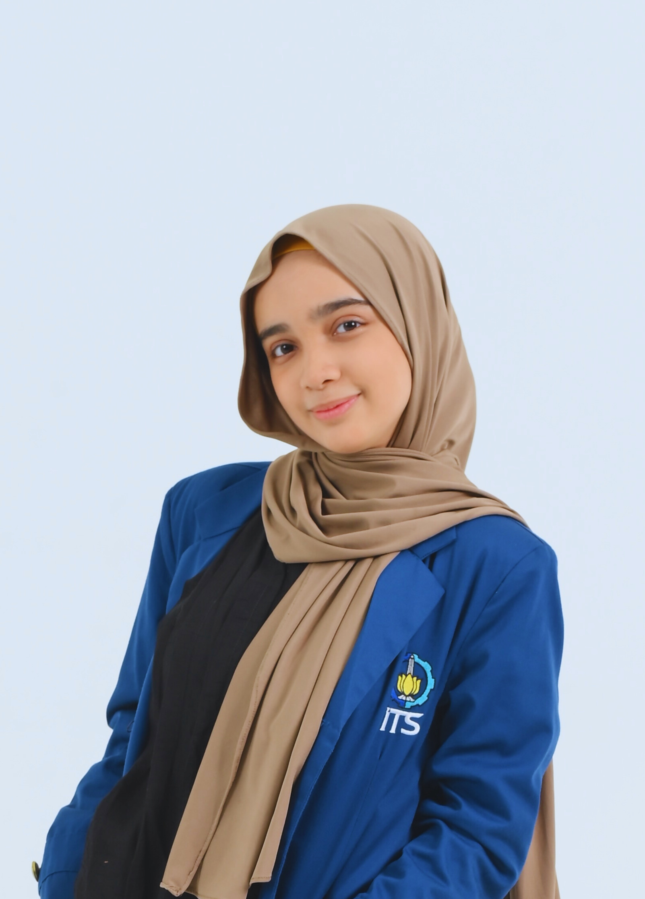

Syahri Banun
UNDERGRADUATE STUDENTS OF AI ENGINEERING
CONTACT
📱 +62853-7373-6132
✉️ Syahribanun03@gmail.com
📍Surabaya, Indonesia
📎 linkedin.com/in/syahri-banun-b358b3262
📎 kaggle.com/syahribanun
PROFESSIONAL OVERVIEW
I am an AI student at ITS with a strong interest in machine learning and data analysis. Through competitions and personal projects, I have developed practical experience in data-driven problem solving and model development. I aim to join an AI community to contribute to innovative projects, collaborate with like-minded peers, and further develop my expertise to create tangible impact in the field of artificial intelligence.
EDUCATION
Institut Teknologi Sepuluh Nopember
Bachelor Artificial Intelligence Engineering
2024 to 2028
SMA Ignatius Global School
Senior High School
2021 to 2024
ORGANIZATIONAL EXPERIENCE
Massive x Ini Lho ITS 2026
Project Officer | Nov 2025 - Feb 2026
- Led project planning and coordination for ITS promotional activities in Palembang
- Organized try-outs, talk shows, and outreach programs targeting high school students
- Collaborated with team members to achieve event goals and maximize student engagement
MABACUP ITS
Internal Treasurer| Aug 2025 - Jan 2026
- Managed the budgeting and financial tracking for the event
- Coordinateswith team members to ensure proper allocation of funds
- Maintained accurate records and reports for internal review
Schematics ITS
Vice Director of Public Relation| Mar 2025 - Nov 2025
- Directed promotion and communication for event outreach to schools and institutions
- Ensured high engagement and successful dissemination of event information
Green Generation Palembang
President| Mar 2023 - Feb 2024
- Led a team of 34 members across 7 subdivisions, ensuring effective coordination and execution of tasks
- Successfully implemented all program plans, achieving project objectives on schedule
- Established partnerships with Dispora, Thamrin Group, and other like-minded organizations, expanding event reach and collaboration opportunities
SKILLS & ACHIEVEMENTS
Skills
- Soft Skills: Teamwork & Collaboration, Communication & Public Relations, Project Management, Adaptability & Learning Agility
- Hard Skills:Python programming, SQL, Machine Learning & Data Analysis, Data Visualization
Achievements
- (2025): 1st Place, Data Mining Competition – Axion
FUTURE PLAN
- Dream Job: AI Engineer
- Final Project Plan : Interactive Toko SAKINAH website